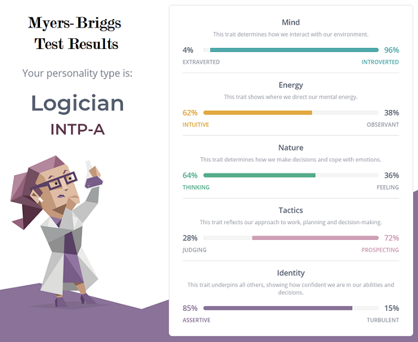
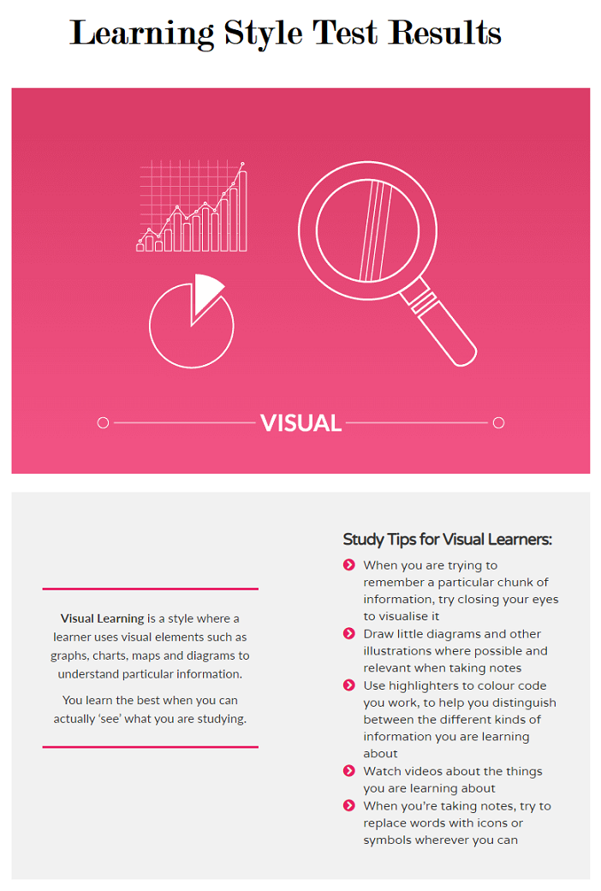
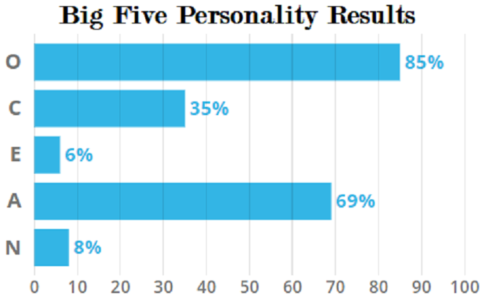

Myers-Briggs, Learning Style and Big Five Personality
Myers-Briggs
Test Meaning
Among other things, after exploring this personality type, I have a better understanding of why I don’t see the world in black and white but a world of opportunities and “what if’s”.
Influence on Team Behaviour
The big risk here for my teammates, is not knowing when to stop pulling a thread at times and losing time on tasks that I may have already found a suitable solution for. The need for refinements and improvements before launching something, can potentially stall a project.
However, this exact same trait can also be hugely beneficial to team members by my constant need to think outside the box to come up with answers and solutions to problems.
Team Formation Considerations
I am excited to think of what the future holds for us considering what we have achieved so far, and for the endless possibilities and opportunities that Information technology is going to award us moving forward.
Learning Style
Test Meaning
The learning test provides insight into the way we would prefer to study or learn something new. This test result certainly comes as no surprise to me personally, therefore I find it hard to attribute any significant value to the result at all.
I generally look at many options for learning something new that may promote my understanding of a topic etc, and already apply many of the suggested study tips for visual learners (as I have done most of my life).
Influence on Team Behaviour
I can accept that we all have different strengths when it comes to absorbing or learning something new. My acceptance of this fact gives me patience when collaborating with others (particularly if this understanding is mutual).
Team Formation Considerations
There is rarely ever, only one source of information that can give us what we need to learn something new. Most of us can find at least one source of information that will help us.
However, having a balance of different learning styles among team members can only prove beneficial when trying to evaluate different types of information that requires assessment.
Big Five Personality
Test Meaning
A measure of Openness, Conscientiousness, Extraversion, Agreeableness, and Neuroticism.
Like the Myers-Briggs test, this test also provides another insight, or measure of my personality traits.
After seeing the results, I can see some correlation between these two tests and have a good understanding of the outcome as a result. This correlation therefore provides little more in terms of understanding who I am other than what I have already found.
Influence on Team Behaviour
I am open to new ideas and experiences and enjoy helping others where needed. This has always made me a good team player.
However, one insight I did find better explained in this test was a possible need to be more aware of general organisation and focusing on the end goal.
Team Formation Considerations
Much like the considerations mentioned in the Myers-Briggs section, these personality traits have always seen me work successfully within teams (with a variety of different personalities) and achieve common goals.